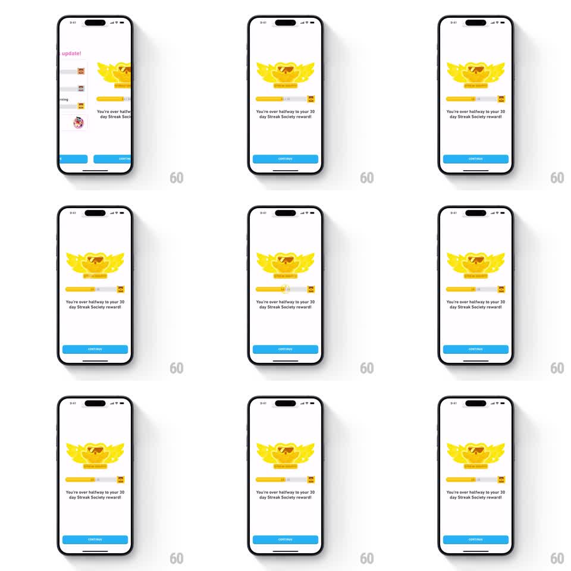

Media
Frame-by-frame

Rebuild this animation 1:1: Duolingo's Streak Society idle screen - a golden winged streak-society badge wiggles above a progress bar that fills to "over halfway", runs a shimmer sweep, and ends on a shaking reward chest at the bar's end, over the "You're over halfway to your 30 day Streak Society reward!" line and blue CONTINUE button.

Rebuild this animation 1:1: Duolingo's Streak Society idle screen - a golden winged streak-society badge wiggles above a progress bar that fills to "over halfway", runs a shimmer sweep, and ends on a shaking reward chest at the bar's end, over the "You're over halfway to your 30 day Streak Society reward!" line and blue CONTINUE button. ## Integration Integration: stack-agnostic spec - springs given as stiffness/damping, timed motions as duration + curve; map every value to your framework and animation library of choice. ## Scene White screen. Center: the Streak Society badge - a golden flaming winged emblem. Below it: a yellow progress bar with a small chest icon riding at its right end, then the "You're over halfway to your 30 day Streak Society reward!" message, and a blue CONTINUE button at the bottom. ## Motion spec Pattern: milestone idle loop with fill, shimmer, and chest shake. - Entrance: the badge pops in (scale 0.7 -> 1.05 -> 1.0, spring ~320/18). - The bar fills from its previous mark to just past halfway (600ms ease-out), the chest riding at the fill's leading edge. - Loop: the badge wiggles (rotate -4deg -> 4deg, 500ms cycle, continuous), a shimmer band sweeps the fill left to right (700ms, every 2.2s), and the chest shakes (rotate -8deg -> 8deg -> 0 twice, 350ms) right after each shimmer passes under it. - Message and button fade up once (200ms) after the first fill. ## Calibration - The chest is attached to the fill's edge - it must travel with the fill, then shake in place. - The loop tiles cleanly: wiggle continuous, shimmer periodic, chest shake keyed to the shimmer. ## Reduced motion Bar fills over 300ms once; badge, chest, and fill stay static afterward. ## Don't miss - The badge wiggle is a rotation around its base, not a position shake. - The shimmer covers only the filled segment, dying at the fill edge.